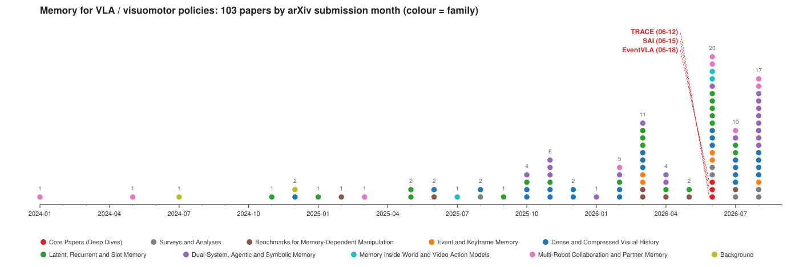

Memory for VLA policies — EventVLA · TRACE · SAI, and the 103-paper landscape
RoboTwin-MeM，8 个双臂任务，必须记住 1–5 个中间关键帧；同一个骨干、同一份数据，只多了 5 帧学习选出的事件帧（EventVLA, Table 2）
| 方法 | 平均成功率 % |
|---|---|
| π₀.₅（无记忆） | 7.8 |
| MemER（双系统） | 10.5 |
| MemoryVLA (QwenOFT)（帧缓冲） | 10.8 |
| EventVLA 仅锚帧（初始帧 + 近期帧） | 18.0 |
| EventVLA 锚帧 + KEM | 75.2 |
a_t = π(o_t, l)，默认一切可见决策时刻证据已经不在当前观测里：被盖住的物体 / 早期分支线索 / 搭档的相位
2606.20092USTC / 上海 AI Lab
KEM 头从 VLA 隐状态预测未来 50 步的关键帧概率，存原图，5 帧 FIFO；RoboTwin-MeM 18.0 → 75.2
2606.14551浙大 / 悉尼大学
外挂 K 槽 latent 记忆，用机器人轨迹的路径签名做读写地址；ACT 25.5 → 69.2，顺序反转路由相似度 37.8
2606.16490浙大 / 悉尼大学
单遥操作者三阶段非对称课程学双机器人耦合策略；30 步 GRU 历史把提前松手 64.5% → 16.1%
| EventVLA | TRACE | SAI | |
|---|---|---|---|
| 看不见的是什么 | 消失的视觉证据 | 早期分支线索 | 搭档内部相位 |
| 记忆内容 | 原始图像帧 | 512 维 latent 槽 | GRU 隐状态 |
| 何时写 | 学习的关键帧概率 + NMS + 冷却 | 每步，门控 | 每步 |
| 寻址 | 时间拼接 + 注意力 | 轨迹路径签名 | 无 |
| 代价 | 吞吐 2.91 → 0.94 Hz | +2.1 ms / 步 | 干预数据 ≈ 30% |
1-D NMS（w = 8）+ 冷却（C = 10）防止同一事件灌满缓冲区
事件常在一个动作块中途出现又消失，逐步分类器来不及；共享 h_t 让 KEM 知道策略接下来要做什么，能预约一次写入。
| 方法 | RMBench | RoboTwin-MeM |
|---|---|---|
| π₀.₅ | 10.4 | 7.8 |
| MemER / Mem-0 | 8.7 / 42.0 | 10.5 / 0.0 |
| MemoryVLA (QwenOFT) | 41.7 | 10.8 |
| EventVLA 仅锚帧 | 67.8 | 18.0 |
| EventVLA 锚帧 + KEM | — | 75.2 |
| 消融（RoboTwin-MeM） | ||
| 隐式记忆库（latent） | 24.9 | |
| 硬标签 / 去 NMS | 48.8 / 53.4 | |
| N_max = 2 | 32.0 | |
| 动作块 30 / 15 | 31.1 / 13.6 | |
真机 ARX ACONE 4 任务 × 20：90 / 60 / 90 / 75，π_MEM 50 / – / 30 / 40
留意：KEM 未在 RMBench 上测；两套基准同出 RoboTwin 系；5 帧 FIFO 对 > 10 分钟任务会饱和
L_bal 防槽塌缩 · L_ent 防弥散写入 · L_cons 防读写失配；去掉它们 69.23 → 66.10
| 方法（5 真机任务，阶段进度 %） | 平均 |
|---|---|
| ACT / Diffusion Policy | 25.50 / 25.00 |
| π₀.₅（同数据微调） | 50.47 |
| GRU 循环记忆 | 45.83 |
| Transformer 历史上下文 | 52.10 |
| LRU 外部记忆 | 53.93 |
| 检索提示记忆（MAP-VLA 式） | 56.30 |
| TRACE（回归 / 扩散） | 69.23 / 59.53 |
| 只有签名 / 无路由槽 / 去增量 | 45.50 / 52.17 / 61.43 |
| 变换 | 路由相似度 | 分支一致性 |
|---|---|---|
| 时间重采样 | 92.4 | 96.0 |
| 速度抖动 | 89.8 | 94.7 |
| 状态偏移 | 91.2 | 95.1 |
| 稀疏采样 | 86.5 | 92.3 |
| 顺序反转（负对照） | 37.8 | 41.6 |
同样的分岔点画面、同样的权重，把历史倒放，记忆读出就变了——「记忆在用有序历史」从假设变成测量。
A 与顺从人类搭档；搭档区域随机化（噪声 / 模糊 / SD 修补）
冻结 A，人遥操 B；A 加速度 / 噪声 / 时序扰动
A+B 联合部署，对 A 稀疏 DAgger 干预（≈ 30% 数据，动作维掩码）
策略：ACT + 冻结 DINOv3，30 步历史（12 帧对数采样 → GRU 历史 token），级联底盘 → 手臂头；两台机器人无通信，各自局部观测
| 任务 | 方法 | 成功 | 相位同步 | 让步 |
|---|---|---|---|---|
| Bed-throw | 独立 / SAI | 23.3 / 53.3 | 30.8 / 62.5 | 26.7 / 68.3 |
| Tablecloth | 独立 / SAI | 43.3 / 66.7 | 54.4 / 68.9 | 46.7 / 70.0 |
| Laundry | 独立 / SAI | 50.0 / 70.0 | 51.7 / 73.3 | 31.7 / 71.7 |
| Painting | 独立 / SAI | 33.3 / 56.7 | 42.7 / 74.7 | 34.4 / 68.9 |

2025 全年 24 篇；2026 年 1–5 月 23 篇；6 月 20 篇、7 月 10 篇、8 月 17 篇。春天落地的 RMBench（3-01）/ RoboMME（3-04）/ RoboMemArena（5-11）给了方法论文共同的靶子，夏天的论文是第一轮回应。
第六个方向：多机器人搭档记忆（SAI, HATS, Duet），几乎空白
| 问题 | EventVLA | TRACE | 其他典型答案 |
|---|---|---|---|
| 存什么 | 原图 | 512-D latent | 1 token/帧、K/V、文本、语义图、力序列 |
| 何时写 | 学习触发 + NMS | 每步，门控 | 规则、事件分类器、子目标完成、验证后推进 |
| 寻址 | 时间拼接 | 轨迹签名 | 内容相似、进度查询、LRU |
| 存多少 | 5 + 锚帧 | K = 4/6 | 固定 token、线性增长、文本无界 |
| 接在哪 | 视觉编码器输入 | 动作头前适配器 | 动作专家条件、KV 缓存、提示 |
| 监督 | 235B 标注 + 软标签 | 三项稳定器 | 时间对比、PTP、VQA 蒸馏、TBPTT |
两个极端在同一个月被占住：EventVLA 押「何时写」，TRACE 押「从哪读」。既学写入时机、又学寻址的中间地带还是空的。
| 基准 | 方法 | 数字 |
|---|---|---|
| RMBench（9 任务） | π₀.₅ / Mem-0 / MemoryVLA → ChainVLA / EventVLA 仅锚帧 / Chronos | 10.4 / 42.0 / 41.7 → 62.8 / 67.8 / 73.6 |
| RoboMME（16 任务） | π₀.₅ / FrameSamp+Modul / PonderPounce 9B | 17.93 / 44.51 / 60.83（9× 数据 75.54） |
| RoboMemArena（26 任务） | π₀.₅ → HyMeS（累计 / 任务成功）；BATON | 52.5 / 41.3 → 66.2 / 60.1；+14.9 / +11.6 |
| MIKASA-Robo（32 任务） | MemoryVLA；μVLA（5 训练任务）；ELMUR | 41.2；0.42 → 0.84；21/23 最好 |
| 真机瞬态证据 | EventVLA；KEMO；UniMem；Chronos | 90–60；+23.6 成功；80.0 vs 43.5；78% |
| 真机延迟证据 | TRACE (ACT) vs π₀.₅ | 69.23 vs 50.47 |
「初始帧 + 近期帧」已到 67.8；Chronos 73.6 靠全历史 SSM 而非事件记忆
RoboMME / RoboMemArena 榜首都是高层管状态的方案（PonderPounce, HyMeS, BATON）
真机上 EventVLA / KEMO / UniMem 绝对成功率最高；各基准口径不同，跨论文数字不可直接比较
EventVLA 只换记忆表征（原图 vs latent）；TRACE 只换寻址（有无签名路由、有无增量）；SAI 只换数据课程（架构固定）。说服力来自单变量对照。
EventVLA 报延迟（0.94 Hz），TRACE 报每步毫秒与参数增量（+24.6% / +10.3%），SAI 报干预数据占比（30%）。读者能判断收益是否值得。
TRACE 的顺序反转负对照把「记忆在用历史」从假设变成可测量；Liao & Cao 的探针 + 因果干预回答「历史是不是当前帧的副本」。
| 交付物 | 路径 |
|---|---|
| 三篇核心论文英文 PDF / 保版式中译 PDF | papers/pdf/ · papers/zh/ |
| 深读报告（中 / 英，md + pdf） | reports/ · reports/pdf/ |
| 趋势与洞见（中 / 英） | reports/04_trends_insights_{cn,en}.md |
| 设计空间矩阵 | insights/DESIGN_SPACE_MATRIX.md |
| 103 篇论文笔记 · BibTeX | notes/ · awesome_memory_vla.bib |
| 汇总报告（中 / 英 HTML + PDF） | report/ |
| 幻灯片（HTML + Beamer PDF） | slides/ |
python3 scripts/build_manifest.py → make_notes.py → make_bib.py → make_readme.py → build_pdfs.py
翻译：bash scripts/translate_core.sh <KEY>（SuperTranslate + DeepSeek）或 translate_fallback_google.sh（免 key）
在 scripts/curated_ids.tsv 加一行 + 在 scripts/oneliners_cn.json 写一句话定位，运行生成脚本即可。
EventVLA (2606.20092) · TRACE (2606.14551) · SAI (2606.16490)
Present but Not Remembered (2607.03372) · RoboMME (2603.04639) · AGM (2608.29537) · Chronos (2606.30318)
github.com/asimfish/awesome_memory_vla · maintained by asimfish